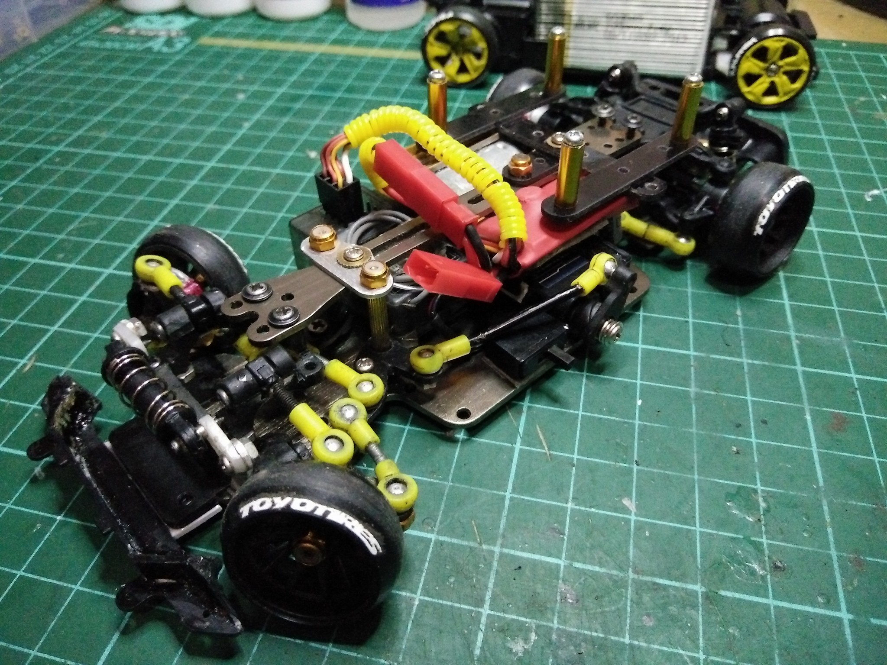
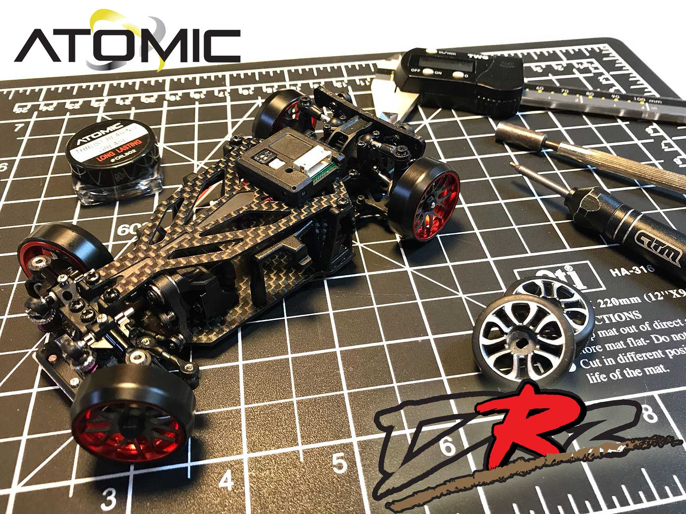
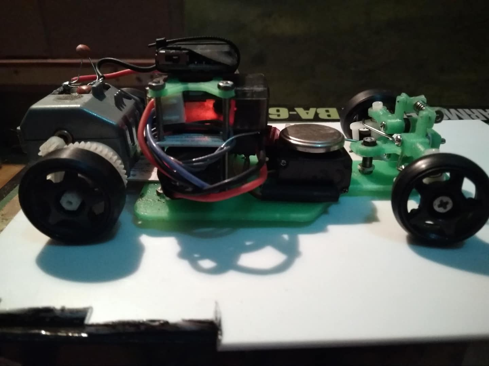

How RWD came to small scale drifting¶
Early experiments – Afada Rioo¶
Imagine searching by keyword RWD at all mini rc groups by year until there's no results, and the earliest i found it mentioned was 2014. But imagine that at the group Mini R/C Drift Hobby Indonesia, everything according to RWD was either made or posted by Afada Rioo. He was a pioneer at the time! Going trough the posts, i felt the anticipation of each next post of Afada Rioo by the community. He challenged himself and accepted! Not by any means of today's standard, but still...he did, and not only by making his project work, but more importantly, by inspiring everyone else. I recall going through his posts, it seemed like he was explaining rocket science. It was different than it's now. He couldn't just buy precise nano electronics, because there weren't any. He had to learn so much in all aspects and do many experiments, change the way some electronics work and he did it! Today we can say that he's the grandfather of small scale rwd drifting, and it's really related in interesting way.
Legowo Setiawan and the first K989 conversion (2016)¶

Legowo Setiawan was into 1/10 rc drift and he studied the constructions and how stuff worked there.
In 2015 he decided to to use what he's learnd and some of Afada Rioo's discoveries and started his work on rwd project.
During 2016, he managed to convert Wltoys K989 to RWD drift car. Inspired to go even further. In 2017 he successfully
converted Atomic AMR to RWD drifter and that didn't go unnoticed.

 He received an endorsement from Atomic. The manager, mr.Kim, who started developing a kit based on his build.
Legowo made two prototype kits: one of them, he sent to Atomic, and the other, he continued developing himself.
According to mr.Setiawan, DRZ1 and DRZ2 are result from his research with Atomic, but at the end of 2018,
Atomic unilaterally ended the contract with him and still haven't responded to his last message.
Still waiting for mr.Kim to reply to my message, because hearing one of the sides isn't the whole story,
but one thing is certain. It's mr.Legowo Setiawan and mr.Kim that are responsible for the existence of
the first dedicated small scale, rear wheel drive, rc drift chassis.
He received an endorsement from Atomic. The manager, mr.Kim, who started developing a kit based on his build.
Legowo made two prototype kits: one of them, he sent to Atomic, and the other, he continued developing himself.
According to mr.Setiawan, DRZ1 and DRZ2 are result from his research with Atomic, but at the end of 2018,
Atomic unilaterally ended the contract with him and still haven't responded to his last message.
Still waiting for mr.Kim to reply to my message, because hearing one of the sides isn't the whole story,
but one thing is certain. It's mr.Legowo Setiawan and mr.Kim that are responsible for the existence of
the first dedicated small scale, rear wheel drive, rc drift chassis.
Birth of the Atomic DRZ¶

-On 06 January 2018, Atomic announced the DRZ on their facebook page.
-Sales started during march.
Some people found out about it from Atomic, RcMart, DriftaHolics RC, Mini-Z groups, but still small scale wasn't that popular.
Some hobbyists started to develop their own designs. For example, October 2018, Pebysetyana has shown the first BRP.¶

Super Skeeter conversion by BMHobby (BM Racing)¶

- At 12 June, the Super Skeeter conversion by BM racing was released, offering:
- steering crank direct drive with servo.
- easily wheel base adjustment.
- caster quick adjustment.
- Ackermann angle adjustment.
XRX Techstorm DPA¶

I have to add some stuff about XRX-dpa here
COVID-19 and the boom of home drifting¶
- ограниченията за излизане
- хората, които си правят писти вкъщи
- как пандемията ускорява развитието на хобито
- как се променя общността (повече build-ове, повече онлайн споделяне, Discord/FB групи)
Summary¶
Кратко резюме: - кои са ключовите хора - кои са ключовите шасита и конверсии - как RWD манията се пренася в малък мащаб